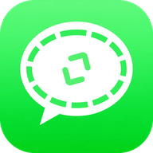
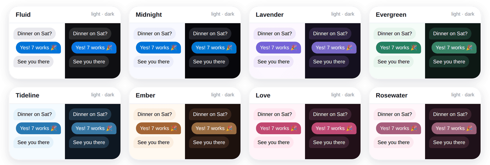

💬
Hearts become sentences
When an iPhone friend loves your message, you get Loved "See you at 7" instead of a heart.

FluidMessagesPrivate, beautiful, and packed with features. On your phone and on your computer. Free, with no ads.

When an iPhone friend loves your message, you get Loved "See you at 7" instead of a heart.
Newer texting features () only work if your carrier, your phone, and your app all happen to support them.
Most texting apps look the same, and you can barely change anything.
Nothing tells you who could read a message.
Lose or switch your phone, and they can be gone.
There's no simple way to text from your computer.
iPhone users have had a smooth, private, fun way to message for years. FluidMessages brings that to Android, and to your computer.

FluidMessages is a texting app for Android that you use instead of the one your phone came with. It uses your normal phone number and works with everyone you already text, on any phone. No carrier deals, no sign-up, no account with us.
Real reactions, message effects, polls, plans, games, and hidden messages. Friends on any phone can still read and reply.
A small lock on every chat tells you exactly who could read it. Lock the app, lock a chat, or hide one away.
Eight color themes, your own bubble colors, wallpapers, sounds, and motion. No more gray.
Password-protected to your phone, your own server, or a cloud service you choose.
Read and reply from a browser or a desktop app, in sync with your phone.
A Phone tab for your calls, right next to your messages.
FluidMessages becomes your texting app, replacing the one your phone came with. Your old texts stay right where they are, and you get everything on this page.
FluidMessages is a texting app for Android, because iPhones only let Apple's own Messages app send texts. iPhone users can still use it on a computer for other chats.
If you've used an iPhone, you know: messages to other iPhones are blue, and messages to Android phones turn green. Green means a plain, old-style , so hearts on messages arrive as clumsy sentences like Loved "Yes! 7 o'clock?".

FluidMessages fixes this on the Android side. Those sentences turn back into real hearts, and you get polls, plans, and games right in the chat. Your iPhone friends don't have to change a thing.
Everything you'd expect from a modern messenger, over regular texts.
Touch and hold a message to send a ❤️, 👍 or 😆, with a little animation.
In a busy group, answer the exact message you mean, so nobody gets confused.
Ask "which day works?" and watch the votes come in. Plan an event and see who's coming.
Play chess, tic-tac-toe, and more, one move at a time.
Send a message that stays blurred until your friend taps it.
Send a message with confetti, hearts, or a big slam.
Fix a typo after sending, or write bold and italic.
Mute a person or group for an hour, a day, or for good.
Crop, filters, drawing, text, stickers, and background removal.

Pick a theme, choose your own bubble colors, set a wallpaper, and pick your sounds. Try everything in a practice inbox before you switch.

Connect your phone and your messages show up on your computer, in a browser or the desktop app, so you can type on a real keyboard. Changes on one show up on the other.

FluidMessages can also bring in chats from like Matrix, XMPP, Email, and IRC, and join big with many chat rooms. They sit next to your texts with a small tag, so you know where each came from. Completely optional.
Most texting apps never tell you how private a message is. FluidMessages shows a small lock on every conversation. Texts are when you and your friend both use FluidMessages, and the lock turns green.

Lock the whole app, or just one chat, with a code or your fingerprint.
Tuck private chats away where they don't show in your inbox.
Have messages remove themselves after an hour, a day, or a week.
What FluidMessages never does: show ads, track you, or ask you to make an account. Every line of code is public, so anyone can check.
Which one do you need?

The app lets you know when there's an update. It comes as an file.
To see your texts on your computer, connect your Android phone from Settings → Phone and other devices.
Your computer may warn you the first time you open it, because the app isn't signed by Apple or Microsoft yet. Here's what to do. Not sure what is? Then you don't use it.
Run the computer version on your own machine or home server, so everything stays in your house. This is called . It runs anywhere Docker does, even a Raspberry Pi.
$ docker compose up -dThen open http://localhost:8080. No phone needed; connect one later for your texts.
Yes. No price, no subscription, no ads. It's , so anyone can read exactly how it works.
No. RCS is a newer texting standard that only works when your carrier, phone, and app all support it, and on Android only a couple of big companies' apps are allowed to use it. FluidMessages gives you reactions, effects, polls, and more over regular texts instead, so they work with anyone.
No. It works with everyone you already text, on any phone. If they also have FluidMessages, your texts to each other can be encrypted, and extras like hidden messages look their best.
Not as a texting app, because Apple only lets its own Messages app send texts. iPhone users can still use FluidMessages on a computer for other chats.
No. FluidMessages reads the texts already on your phone. If you ever go back to your old app, they're still there.
It's built in the open on GitHub, where anyone can check the code. Your phone asks before installing apps from outside the Play Store, which is normal.
that no single company owns. Many communities, clubs, and workplaces use them. FluidMessages can sign in to them so those chats sit next to your texts.
Tap any underlined word on this page for a quick explanation. Here they all are in one place.